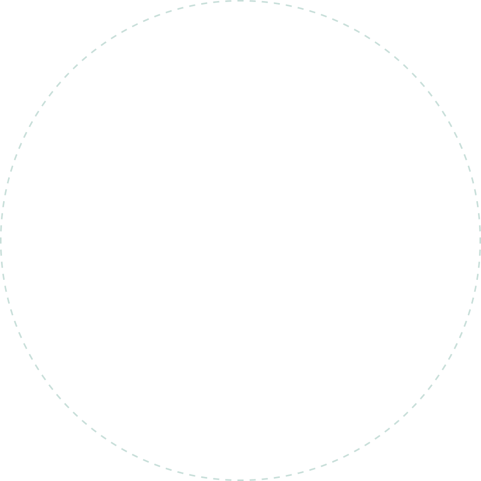
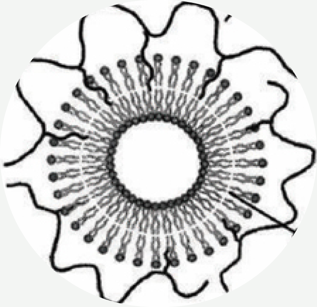
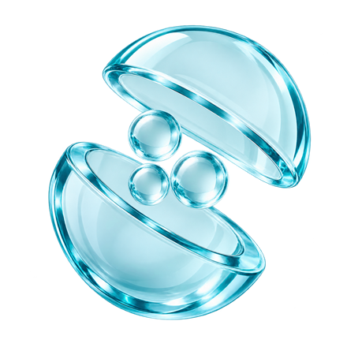
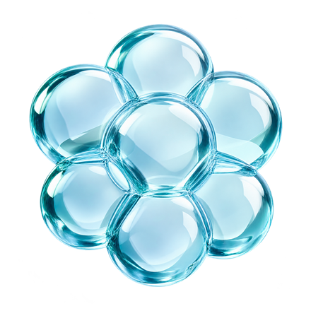

HOME
HOME- 보유기술
- Advanced Delivery System
Advanced Delivery System
Custom Stabilization
맞춤형 안정화 기술
원료의 안정성과 용해도를 향상시킬 수 있는 혁신적인 기술을 보유하고 있습니다.
물질의 구조, 특성 및 용도에 따라 맞춤형 안정화 기술을 개발합니다.
Nano-Multiple Liposome


Embedded Amphiphilic polymer
Liposome
안정성
원료의 안정성을 향상시키는
맞춤형 안정화 기술
용해도
물질의 구조, 특성 및 용도에
따라 적용하는 전달 기술
5 Stabilization Techs
다섯 가지 안정화 기술
-
Cyclodextrin
inclusion사이클로덱스트린 포접
01
-
multiple
liposome다중 리포좀
02
-
micro-
encapsulation
미세 캡슐화
03
-
liquid crystal
액정 구조
04
-
self-assembled
nanoparticle
자기조립 나노입자
05